MORHOLOGICAL CHART
| Sr. No. | Subfunctions | Means 1 | Means 2 | Means 3 | Means 4 |
|---|---|---|---|---|---|
| 1 | Move / Walk forward |
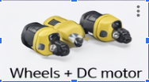 Wheels + DC motor
|
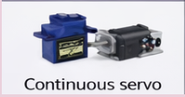 Continuous servo
|
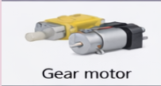 Gear motor
|
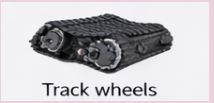 Track wheels
|
| 2 | Turn left or right (after obstacle detection) |
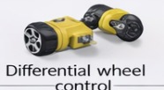 Differential wheel control
|
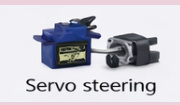 Servo steering
|
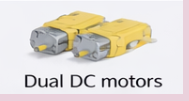 Dual DC motors
|
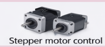 Stepper motor control
|
| 3 | Obstacle detection |
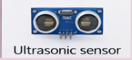 Ultrasonic sensor
|
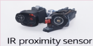 IR proximity sensor
|
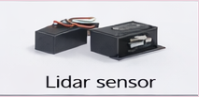 Lidar sensor
|
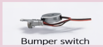 Bumper switch
|
| 4 | Air quality sensor |

MQ135 gas sensor
|

MQ2 gas sensor
|

CCS811 air quality sensor
|

BME680 sensor
|
| 5 | Temperature sensing |

Temperature sensor
|

Temperature module
|

Digital temperature IC
|

Digital temp sensor
|
| 6 | Distance measurement |

Ultrasonic sensor
|

IR distance sensor
|

ToF sensor
|

Lidar sensor
|
| 7 | LED status indication |

Red/Green LED pair
|

Bi-color LED
|

RGB LED
|

LED + buzzer
|
| 8 | Head rotation / sensor control |

Servo motor
|

Mini stepper motor
|

Pan-tilt servo mount
|

DC geared motor
|
FUNCTION TREE
Ladybug Insectronics Model
Environment Monitoring
Air Quality Sensing
Temperature Sensing
Distance Measurement
Movement & Navigation
Move / Walk Forward
Detect Obstacle
Turn Left / Right after Detection
Head Rotation / Sensor Direction Control
System Status Indication
LED Status for Object Detection (Red / Green)
Battery Level Indication (LED)
Power Management
Supply Power to System
Monitor Battery Level
PRODUCT ARCHITECTURE
Ladybug Insectronics Model
Environment Monitoring
Air Quality Sensing
Temperature Sensing
Distance Measurement
Movement & Navigation
Move / Walk Forward
Detect Obstacle
Turn Left / Right
Head Rotation
System Status
LED Status
Battery Level Indicator
CONCEPT DESIGN
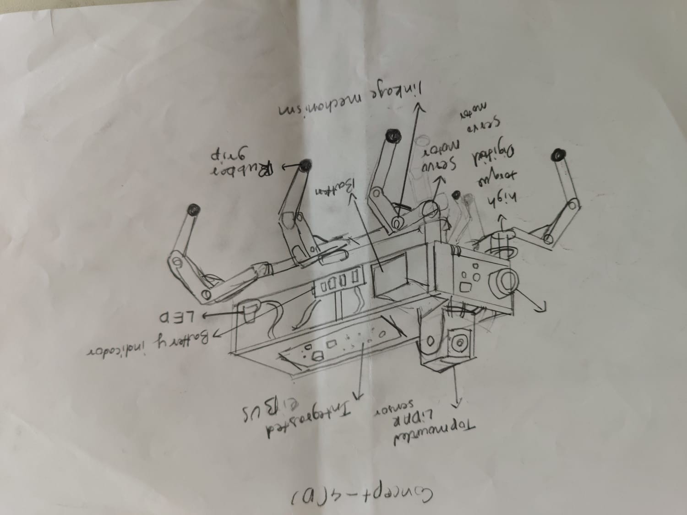